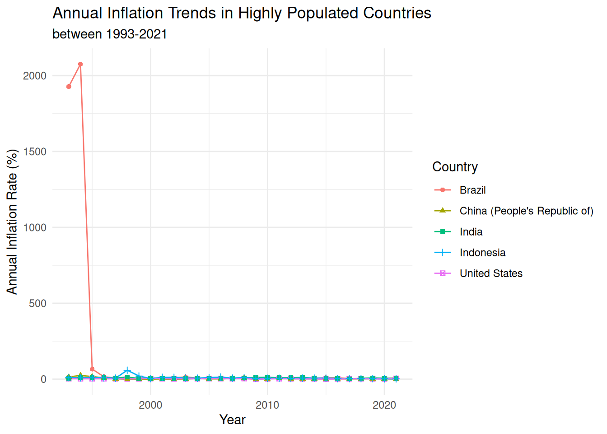
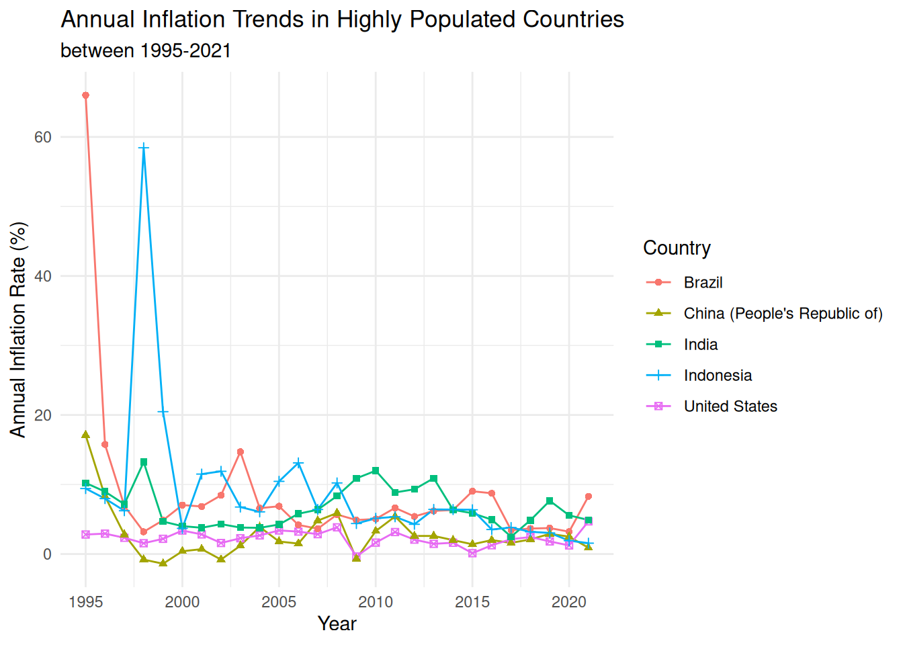
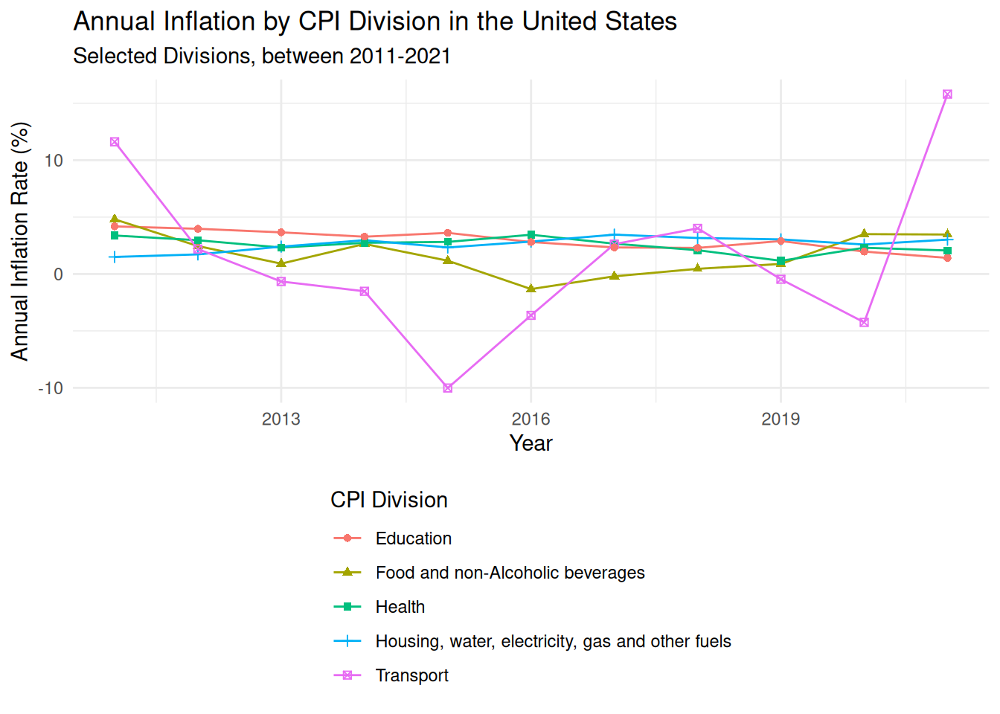

library(tidyverse)Lab 3 - Data tidying and joining
Questions
Part 1
Inflation across the world
For this part of the analysis you will work with inflation data from various countries in the world over the last 30 years.
country_inflation <- read_csv("data/country-inflation.csv")Question 1
Get to know the data.
glimpse()at thecountry_inflationdata frame and answer the following questions based on the output. How many rows doescountry_inflationhave and what does each row represent? How many columns doescountry_inflationhave and what does each column represent?
glimpse(country_inflation)Rows: 44
Columns: 30
$ country <chr> "Australia", "Austria", "Belgium", "Canada", "Czech Republic",…
$ `1993` <dbl> 1.753653, 3.631786, 2.754426, 1.865079, 20.813026, 1.257862, 2…
$ `1994` <dbl> 1.9696348, 2.9534065, 2.3775445, 0.1655629, 10.0394242, 1.9920…
$ `1995` <dbl> 4.6277666, 2.2433638, 1.4679612, 2.1487603, 8.9905306, 2.08360…
$ `1996` <dbl> 2.6153846, 1.8609741, 2.0770246, 1.5705311, 8.7587747, 2.12629…
$ `1997` <dbl> 0.2248876, 1.3059833, 1.6281605, 1.6212164, 8.5961567, 2.18216…
$ `1998` <dbl> 0.8601346, 0.9224669, 0.9492503, 0.9959425, 10.6983655, 1.8456…
$ `1999` <dbl> 1.4831294, 0.5689865, 1.1208482, 1.7348430, 2.1354484, 2.49779…
$ `2000` <dbl> 4.4574351, 2.3448684, 2.5445178, 2.7194400, 3.7753883, 2.90327…
$ `2001` <dbl> 4.407135, 2.650000, 2.469258, 2.525120, 4.662676, 2.337875, 2.…
$ `2002` <dbl> 2.981575, 1.810359, 1.645214, 2.258394, 1.902981, 2.424437, 1.…
$ `2003` <dbl> 2.7325960, 1.3555538, 1.5889640, 2.7585632, 0.1187392, 2.07507…
$ `2004` <dbl> 2.3432552, 2.0612068, 2.0972831, 1.8572587, 2.7601078, 1.15435…
$ `2005` <dbl> 2.6918317, 2.2991377, 2.7814326, 2.2135520, 1.8570979, 1.81781…
$ `2006` <dbl> 3.555288, 1.441547, 1.791208, 2.002025, 2.533993, 1.924221, 1.…
$ `2007` <dbl> 2.3276113, 2.1685559, 1.8230563, 2.1383840, 2.8531244, 1.69326…
$ `2008` <dbl> 4.350299, 3.215951, 4.489444, 2.370271, 6.358664, 3.416268, 4.…
$ `2009` <dbl> 1.771117e+00, 5.063094e-01, -5.314567e-02, 2.994668e-01, 1.019…
$ `2010` <dbl> 2.9183400, 1.8135317, 2.1892992, 1.7768715, 1.4727273, 2.31092…
$ `2011` <dbl> 3.303850, 3.286583, 3.532082, 2.912135, 1.917219, 2.758682, 3.…
$ `2012` <dbl> 1.7627802, 2.4856751, 2.8396634, 1.5156782, 3.2876231, 2.39791…
$ `2013` <dbl> 2.44988864, 2.00015749, 1.11309594, 0.93829190, 1.43829787, 0.…
$ `2014` <dbl> 2.48792271, 1.60580560, 0.34000283, 1.90663591, 0.34398859, 0.…
$ `2015` <dbl> 1.50836672, 0.89656529, 0.56142915, 1.12524136, 0.30936455, 0.…
$ `2016` <dbl> 1.276990945, 0.891592367, 1.973852647, 1.428759547, 0.68350420…
$ `2017` <dbl> 1.9486474, 2.0812686, 2.1259709, 1.5968841, 2.4505340, 1.14713…
$ `2018` <dbl> 1.9114009, 1.9983819, 2.0531650, 2.2682257, 2.1494949, 0.81360…
$ `2019` <dbl> 1.6107679, 1.5308955, 1.4368196, 1.9492690, 2.8478760, 0.75813…
$ `2020` <dbl> 0.84690554, 1.38190955, 0.74079181, 0.71699963, 3.16129528, 0.…
$ `2021` <dbl> 2.863910, 2.766667, 2.440249, 3.395193, 3.839845, 1.853045, 2.…country_inflation dataset has 44 rows and 30 columns. Each row represents a country, while each column represents the annual inflation rate.
- Display a list of the countries included in the dataset.
country_inflation |>
pull(country) [1] "Australia" "Austria"
[3] "Belgium" "Canada"
[5] "Czech Republic" "Denmark"
[7] "Finland" "France"
[9] "Germany" "Greece"
[11] "Hungary" "Iceland"
[13] "Ireland" "Italy"
[15] "Japan" "Korea"
[17] "Luxembourg" "Mexico"
[19] "Netherlands" "New Zealand"
[21] "Norway" "Poland"
[23] "Portugal" "Slovak Republic"
[25] "Spain" "Sweden"
[27] "Switzerland" "Türkiye"
[29] "United Kingdom" "United States"
[31] "Argentina" "Brazil"
[33] "Chile" "China (People's Republic of)"
[35] "Estonia" "India"
[37] "Indonesia" "Israel"
[39] "Russia" "Saudi Arabia"
[41] "Slovenia" "South Africa"
[43] "Colombia" "Costa Rica" Question 2
Which countries had the top three highest inflation rates in 2021? Your output should be a data frame with two columns, country and 2021, with inflation rates in descending order, and three rows for the top three countries. Briefly comment on how the inflation rates for these countries compare to the inflation rate for United States in that year.
country_inflation |>
select(country, `2021`) |>
arrange(desc(`2021`)) |>
slice_head(n = 3)# A tibble: 3 × 2
country `2021`
<chr> <dbl>
1 Argentina 48.4
2 Türkiye 19.6
3 Brazil 8.30country_inflation |>
filter(country == "United States") |>
select(country, `2021`)# A tibble: 1 × 2
country `2021`
<chr> <dbl>
1 United States 4.70The three countries with highest inflation rates in 2021 were Argentina, Turkiye, and Brazil. Their inflation rate were higher than United States, which had an inflation rate of 4.698% in 2021.
Question 3
In a single pipeline,
- calculate the ratio of the inflation in 2021 and inflation in 1993 for each country and store this information in a new column called
inf_ratio, - arrange the data frame in decreasing order of
inf_ratio, and - select the variables
countryandinf_ratioto display as the result of the pipeline.
Do not save this new variable in inf_ratio, only calculate and display it so you can answer the following question based on the output of the pipeline.
Which country’s inflation change is the largest over this time period? Did inflation increase of decrease between 1993 and 2021 in this country?
country_inflation |>
mutate(inf_ratio = `2021` / `1993`) |>
arrange(desc(inf_ratio)) |>
select(country, inf_ratio)# A tibble: 44 × 2
country inf_ratio
<chr> <dbl>
1 New Zealand 3.06
2 Canada 1.82
3 Australia 1.63
4 Ireland 1.60
5 United States 1.59
6 Norway 1.52
7 Denmark 1.47
8 Iceland 1.10
9 Netherlands 1.04
10 Finland 1.00
# ℹ 34 more rowsNew Zealand experienced largest inflation rate between 1993 and 2021, with an inflation ratio of 3.06. This indicates that the inflation in 2021 is three times higher than in 1993, meaning inflation increased over this period.
Question 4
Reshape (pivot) country_inflation such that each row represents a country/year combination, with columns country, year, and annual_inflation. Then, display the resulting data frame and state how many rows and columns it has.
Requirements:
- Your code must use one of
pivot_longer()orpivot_wider(). There are other ways you can do this reshaping move in R, but this question requires solving this problem by pivoting. - In your
pivot_*()function, you must usenames_transform = as.numericas an argument to transform the variable type to numeric as you pivot the data so that in the resulting data frame the year variable is numeric. - The resulting data frame must be saved as something other than
country_inflationso you (1) can refer to this data frame later in your analysis and (2) do not overwritecountry_inflation. Use a short but informative name.
inflation_longer <- country_inflation |>
pivot_longer(
cols = -country,
names_to = "year",
values_to = "annual_inflation",
names_transform = as.numeric
)
view(inflation_longer)The reshaped dataset contains 1,276 rows and 3 columns: country, year, and annual_inflation. Each row represents a unique country-year combination.
Question 5
Use a separate, single pipeline to answer each of the following questions.
Requirement: Your code must use the filter() function for each part, not arrange().
- What is the highest inflation rate observed between 1993 and 2021? The output of the pipeline should be a data frame with one row and three columns. In addition to code and output, your response should include a single sentence stating the country and year.
inflation_longer |>
filter(annual_inflation == max(annual_inflation, na.rm = TRUE))# A tibble: 1 × 3
country year annual_inflation
<chr> <dbl> <dbl>
1 Brazil 1994 2076.- What is the lowest inflation rate observed between 1993 and 2021? The output of the pipeline should be a data frame with one row and three columns. In addition to code and output, your response should include a single sentence stating the country and year.
inflation_longer |>
filter(annual_inflation == min(annual_inflation, na.rm = TRUE))# A tibble: 1 × 3
country year annual_inflation
<chr> <dbl> <dbl>
1 Ireland 2009 -4.48- Putting (a) and (b) together: What are the highest and the lowest inflation rates observed between 1993 and 2021? The output of the pipeline should be a data frame with two rows and three columns.
inflation_longer |>
filter(
annual_inflation == max(annual_inflation, na.rm = TRUE) |
annual_inflation == min(annual_inflation, na.rm = TRUE)
)# A tibble: 2 × 3
country year annual_inflation
<chr> <dbl> <dbl>
1 Ireland 2009 -4.48
2 Brazil 1994 2076. The highest inflation rate observed between 1993 and 2021 occurred in Brazil in 1994, with an inflation rate of 2075.89%. Otherwise, the lowest inflation rate between 1993 and 2021 occured in Ireland in 2009, with negative inflation, -4.478%.
Question 6
- Create a vector called
countries_of_interestwhich contains the names of up tp five countries you want to visualize the inflation rates for over the years. For example, if these countries are Türkiye and United States, you can express this as follows:
distinct(country_inflation)# A tibble: 44 × 30
country `1993` `1994` `1995` `1996` `1997` `1998` `1999` `2000` `2001` `2002`
<chr> <dbl> <dbl> <dbl> <dbl> <dbl> <dbl> <dbl> <dbl> <dbl> <dbl>
1 Austra… 1.75 1.97 4.63 2.62 0.225 0.860 1.48 4.46 4.41 2.98
2 Austria 3.63 2.95 2.24 1.86 1.31 0.922 0.569 2.34 2.65 1.81
3 Belgium 2.75 2.38 1.47 2.08 1.63 0.949 1.12 2.54 2.47 1.65
4 Canada 1.87 0.166 2.15 1.57 1.62 0.996 1.73 2.72 2.53 2.26
5 Czech … 20.8 10.0 8.99 8.76 8.60 10.7 2.14 3.78 4.66 1.90
6 Denmark 1.26 1.99 2.08 2.13 2.18 1.85 2.50 2.90 2.34 2.42
7 Finland 2.19 1.09 0.791 0.629 1.19 1.40 1.16 3.04 2.58 1.57
8 France 2.10 1.66 1.80 1.98 1.20 0.651 0.537 1.68 1.63 1.92
9 Germany 4.47 2.69 1.71 1.45 1.94 0.911 0.585 1.44 1.98 1.42
10 Greece 14.4 10.9 8.93 8.19 5.54 4.77 2.64 3.15 3.37 3.63
# ℹ 34 more rows
# ℹ 19 more variables: `2003` <dbl>, `2004` <dbl>, `2005` <dbl>, `2006` <dbl>,
# `2007` <dbl>, `2008` <dbl>, `2009` <dbl>, `2010` <dbl>, `2011` <dbl>,
# `2012` <dbl>, `2013` <dbl>, `2014` <dbl>, `2015` <dbl>, `2016` <dbl>,
# `2017` <dbl>, `2018` <dbl>, `2019` <dbl>, `2020` <dbl>, `2021` <dbl>countries_of_interest <- c(
"United States", "China (People's Republic of)", "India", "Indonesia", "Brazil"
)I chose these countries because they have some of the largest populations in the world. Inflation in these countries affects a large number of people, so it is interesting to see how price changes have evolved over time in these economies.
- In a single pipeline, filter your reshaped dataset to include only the
countries_of_interestfrom part (a), and save the resulting data frame with a new name so you (1) can refer to this data frame later in your analysis and (2) do not overwrite the data frame you’re starting with. Use a short but informative name. Then, in a new pipeline, find thedistinct()countries in the data frame you created.
inflation_pop <- inflation_longer |>
filter(country %in% countries_of_interest)inflation_pop |>
distinct(country)# A tibble: 5 × 1
country
<chr>
1 United States
2 Brazil
3 China (People's Republic of)
4 India
5 Indonesia Question 7
Using your data frame from the previous question, create a plot of annual inflation vs. year for these countries. Then, in a few sentences, describe the patterns you observe in the plot, particularly focusing on anything you find surprising or not surprising, based on your knowledge (or lack thereof) of these countries economies.
Requirements for the plot:
- Data should be represented with points as well as lines connecting the points for each country.
- Each country should be represented by a different color line and different color and shape points.
- Axes and legend should be properly labeled.
- The plot should have an appropriate title (and optionally a subtitle).
- Plot should be customized in at least one way – you could use a different than default color scale, or different than default theme, or some other customization.
ggplot(inflation_pop,
aes(x = year, y = annual_inflation, color = country, shape = country)) +
geom_line() +
geom_point() +
labs(
title = "Annual Inflation Trends in Highly Populated Countries",
subtitle = "between 1993-2021",
x = "Year",
y = "Annual Inflation Rate (%)",
color = "Country",
shape = "Country"
) +
theme_minimal()
Brazil depicts extremely high inflation in the early 1990s, reflecting a period of hyperinflation (around 2000%). This causes the scale of the plot to stretch significantly compared to the other countries, which experience much lower and more stable inflation rates. Therefore, I decided to filter the range of year from 1995 to 2021 to show more clear trend.
ggplot(inflation_pop |> filter(year >= 1995),
aes(x = year, y = annual_inflation, color = country, shape = country)) +
geom_line() +
geom_point() +
labs(
title = "Annual Inflation Trends in Highly Populated Countries",
subtitle = "between 1995-2021",
x = "Year",
y = "Annual Inflation Rate (%)",
color = "Country",
shape = "Country"
) +
theme_minimal()
Inflation trends vary quite a bit across these countries. Brazil and Indonesia show noticeable spikes in the late 1990s, while the United States and China remain relatively stable throughout the period. India’s inflation fluctuates but stays within a moderate range. Overall, inflation appears much more volatile in some emerging economies compared to the more stable patterns seen in the U.S. and China.
Part 2
Inflation in the US
The OECD defines inflation as follows:
Inflation is a rise in the general level of prices of goods and services that households acquire for the purpose of consumption in an economy over a period of time.
The main measure of inflation is the annual inflation rate which is the movement of the Consumer Price Index (CPI) from one month/period to the same month/period of the previous year expressed as percentage over time.
Source: OECD CPI FAQ
CPI is broken down into 12 divisions such as food, housing, health, etc. Your goal in this part is to create another time series plot of annual inflation, this time for US only.
The data you will need to create this visualization is spread across two files:
us-inflation.csv: Annual inflation rate for the US for 12 CPI divisions. Each division is identified by an ID number.cpi-divisions.csv: A “lookup table” of CPI division ID numbers and their descriptions.
Let’s load both of these files.
us_inflation <- read_csv("data/us-inflation.csv")
cpi_divisions <- read_csv("data/cpi-divisions.csv")Question 8
- How many columns and how many rows does the
us_inflationdataset have? What are the variables in it? Add a brief (1-2 sentences) narrative summarizing this information.
glimpse(us_inflation)Rows: 132
Columns: 4
$ country <chr> "United States", "United States", "United States", "U…
$ cpi_division_id <dbl> 1, 1, 1, 1, 1, 1, 1, 1, 1, 1, 1, 2, 2, 2, 2, 2, 2, 2,…
$ year <dbl> 2011, 2012, 2013, 2014, 2015, 2016, 2017, 2018, 2019,…
$ annual_inflation <dbl> 4.8039240, 2.4539620, 0.9083796, 2.6398010, 1.1677110…dim(us_inflation)[1] 132 4The us_inflation dataset contains 132 rows and 4 columns. It includes annual inflation rates for the United States across different CPI divisions and years, with each row representing a specific division-year combination.
- How many columns and how many rows does the
cpi_divisionsdataset have? What are the variables in it? Add a brief (1-2 sentences) narrative summarizing this information.
glimpse(cpi_divisions)Rows: 12
Columns: 2
$ id <dbl> 1, 2, 3, 4, 5, 6, 7, 8, 9, 10, 11, 12
$ description <chr> "Food and non-Alcoholic beverages", "Alcoholic beverages, …dim(cpi_divisions)[1] 12 2The cpi_divisions dataset contains 12 rows and 2 columns. It serves as a lookup table that links each CPI division ID to its corresponding description.
- Create a new dataset by joining the
us_inflationdataset with thecpi_division_iddataset.
Determine which type of join is the most appropriate one and use that.
Note that the two datasets don’t have a common variable. Review the help for the join functions to determine how to use the
byargument when the names of the variables that the datasets should be joined by are different.Use a short but informative name for the joined dataset, and do not overwrite either of the datasets that go into creating it.
Then, find the number of rows and columns of the resulting dataset and report the names of its columns. Add a brief (1-2 sentences) narrative summarizing this information.
us_join <- us_inflation |>
left_join(cpi_divisions,
by = c("cpi_division_id" = "id"))glimpse(us_join)Rows: 132
Columns: 5
$ country <chr> "United States", "United States", "United States", "U…
$ cpi_division_id <dbl> 1, 1, 1, 1, 1, 1, 1, 1, 1, 1, 1, 2, 2, 2, 2, 2, 2, 2,…
$ year <dbl> 2011, 2012, 2013, 2014, 2015, 2016, 2017, 2018, 2019,…
$ annual_inflation <dbl> 4.8039240, 2.4539620, 0.9083796, 2.6398010, 1.1677110…
$ description <chr> "Food and non-Alcoholic beverages", "Food and non-Alc…The joined dataset contains 132 rows and 5 columns. It combines annual inflation data with CPI division descriptions, making the data easier to interpret by including both the division ID and its corresponding description.
Question 9
- Create a vector called
divisions_of_interestwhich contains the descriptions or IDs of CPI divisions you want to visualize. Yourdivisions_of_interestshould consist of no more than five divisions. If you’re using descriptions, make sure that the spelling of your divisions matches how they appear in the dataset. Then, in 1-2 sentences, state why you chose these divisions.
us_join |>
distinct(description)# A tibble: 12 × 1
description
<chr>
1 Food and non-Alcoholic beverages
2 Alcoholic beverages, tobacco and narcotics
3 Clothing and footwear
4 Housing, water, electricity, gas and other fuels
5 Furnishings, household equipment and routine household maintenance
6 Health
7 Transport
8 Communication
9 Recreation and culture
10 Education
11 Restaurants and hotels
12 Miscellaneous goods and services divisions_of_interest <- c(
"Food and non-Alcoholic beverages",
"Housing, water, electricity, gas and other fuels",
"Health",
"Transport",
"Education"
)selected these divisions because they represent essential categories of household spending and are likely to show different inflation patterns.
- In a single pipeline, filter your reshaped dataset to include only the
divisions_of_interestfrom part (a), and save the resulting data frame with a new name so you (1) can refer to this data frame later in your analysis and (2) do not overwrite the data frame you’re starting with. Use a short but informative name. Then, in a new pipeline, find thedistinct()divisions in the data frame you created.
us_div_interest <- us_join |>
filter(description %in% divisions_of_interest)us_div_interest |>
distinct(description)# A tibble: 5 × 1
description
<chr>
1 Food and non-Alcoholic beverages
2 Housing, water, electricity, gas and other fuels
3 Health
4 Transport
5 Education Question 10
Using your data frame from the previous question, create a plot of annual inflation vs. year for these divisions. Then, in a few sentences, describe the patterns you observe in the plot, particularly focusing on anything you find surprising or not surprising, based on your knowledge (or lack thereof) of inflation rates in the US over the last decade.
- Data should be represented with points as well as lines connecting the points for each division.
- Each division should be represented by a different color line and different color and shape points.
- Axes and legend should be properly labeled.
- The plot should have an appropriate title (and optionally a subtitle).
- Plot should be customized in at least one way – you could use a different than default color scale, or different than default theme, or some other customization.
- If your legend has labels that are too long, you can try moving the legend to the bottom and stack the labels vertically. Hint: The
legend.positionandlegend.directionarguments of thetheme()functions will be useful.
ggplot(us_div_interest,
aes(x = year, y = annual_inflation, color = description, shape = description)) +
geom_line() +
geom_point()+
labs(
title = "Annual Inflation by CPI Division in the United States",
subtitle = "Selected Divisions, between 2011-2021",
x = "Year",
y = "Annual Inflation Rate (%)",
color = "CPI Division",
shape = "CPI Division"
) +
theme_minimal() +
theme(
legend.position = "bottom",
legend.direction = "vertical"
)
The plot shows clear differences across CPI divisions. Transport is the most volatile category, with sharp drops around 2015 and 2020 followed by strong rises. In contrast, housing, health, and education display more stable and gradual movements over time. Food prices fluctuate moderately but do not show extreme changes like transport. Overall, inflation dynamics vary considerably depending on the type of goods and services.